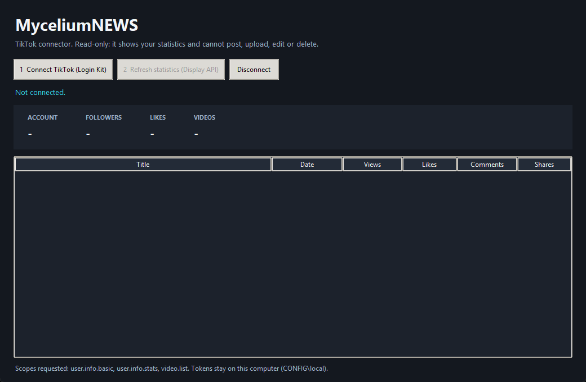

Your TikTok numbers, read-only.
A small Windows application that signs in with TikTok, reads the public statistics of the account you authorize, and shows them in one window. It cannot post, upload, edit or delete anything.
What the application does
1. Connect with TikTok
You sign in on TikTok's own login page using TikTok Login Kit for Desktop and approve the permissions listed below. MyceliumNEWS never sees your TikTok password.
2. Read account statistics
Shows the display name and the follower, following, like and video counts of the connected account.
3. Read video statistics
Lists the account's public videos with duration and view, like, comment and share counts, using the TikTok Display API.
4. Keep a local history
Saves a dated snapshot of these numbers as a file on your computer so you can compare days. Nothing is uploaded anywhere.
5. Disconnect any time
The Disconnect button removes the stored access on your computer and asks TikTok to revoke it.

TikTok products and permissions
The application uses two TikTok products and requests only read-only permissions (scopes):
| Product / scope | What we read | Why |
|---|---|---|
| Login Kit (Desktop) | An authorization from the account holder; TikTok returns an access token for that account. | To let the account holder sign in on TikTok and approve access without sharing a password. |
user.info.basic | Open ID and display name (the profile picture URL is received but not stored). | To show which account is connected. |
user.info.stats | Follower, following, like and video counts. | To show the account summary and its changes over time. |
video.list | For each public video: ID, title or description, creation time, duration, cover image URL, share URL, and view, like, comment and share counts. | To show which videos perform and to save the numbers as snapshots. |
What it does not do
- It does not post, upload, schedule, edit or delete videos, and it does not request any scope that would allow this.
- It does not read direct messages, comment text, follower lists or advertising data.
- It does not send any data to MyceliumNEWS or to any third party. There is no MyceliumNEWS server involved.
How sign-in works
- The application opens TikTok's authorization page in your browser, with a one-time random
statevalue and a PKCE code challenge. - You log in on TikTok and approve the permissions.
- TikTok redirects your browser to a loopback address on your own computer (
http://127.0.0.1with a fixed port). The application checks thestatevalue and exchanges the one-time code for an access token. - The access token is kept in a file on your computer and refreshed automatically before it expires, until you disconnect.
Your data
Everything the application reads or stores stays on the computer where it runs. Details are in the Privacy Policy, and the rules for using the application are in the Terms of Service.